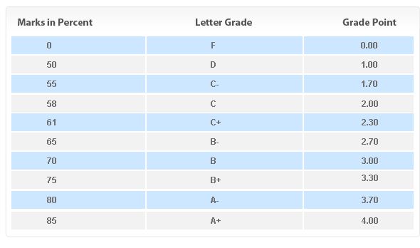

ACADEMIC REGULATIONS
ATTENDANCE
-
75% attendance is required for passing a course. A student with less than required attendance in theory and practical separately shall be dropped from the course, shall not be allowed to appear in the final examination of the course, and shall be awarded grade ‘F’ (Fail).
-
The absence as a result of Late Admission, Change of Course or Leave will also be counted for dropping from the course.
WORKLOAD
-
A student is normally required to take the prescribed courses offered by the College in each semester. However, in special circumstances, a student may add/drop a course with prior approval of the Principal. Permission to add/drop a course must be obtained within the time specified in the College academic calendar, with prior approval of the Principal.
-
A student who fails to pass a course will be awarded grade ‘F’ (Fail)
- A student may enroll in a Dropped/Failed/Withdrawn of course in the following semester by paying the prescribed fee for the course. This must be done within the time specified in the College academic calendar.
INCOMPLETE SEMESTER/COURSES
-
A student unable to complete a course on medical grounds will be awarded grade ‘I’ (Incomplete). Incomplete course must be completed in the following semester, without paying any additional tuition fee. Extension may be granted in special cases with the approval of the Principal.
-
If a student is unable to appear in the Final Examination of a course on medical grounds, grade “I” will be awarded in the course.
-
A student may be allowed to appear in the Special Final Examination of a course, to be held before the commencement of the next semester. The student will not join the next following semester if he/she is unable to take Special Final Examination within the specified time limit. In order to attend this special examination, the student must have:
- Fulfilled minimum attendance requirement
-
Been admitted as a patient in a recognized hospital. If a student has not been hospitalized, he/she will be examined by the University Medical Board comprising Chief Medical Officer and one Medical Officer of the University
COURSE(S) / SEMESTER WITHDRAWAL
COURSE(S)WITHDRAWAL
- A student requesting for semester withdrawal on genuine grounds within the time specified in the College Academic Calendar, may be allowed to withdraw the following (next) semester subject to the following conditions:
-
Written permission to withdraw from the current semester must be obtained from the Principal.
-
Semester fee will not be refunded/transferred.
-
Such students must join the following semester.
-
The semester withdrawal will only be allowed once in a degree program.
SEMESTER FREEZE
-
A student requesting for semester freeze on genuine grounds within the time specified in the College Academic Calendar, may be allowed to freeze the following (next) semester subject to the following conditions:
-
Written permission to freeze the current semester must be obtained from the Principal.
-
Semester fee, if deposited, will be transferred to the next semester.
-
Such students must join the following semester.
-
The semester freeze will only be allowed once in a degree program.
CHANGE OF SECTION/SESSION
-
No student will be allowed to change his/her section during semester. However, the College Council may consider special cases on solid grounds within the first week of the commencement of the semester.
-
No student will be transferred, under any circumstances, from afternoon/evening session to the morning session and vice versa. However, transfer from afternoon to evening and vice versa will be approved by the Principal. Girls will be given preference for changing from evening to afternoon
ASSESSMENT OF STUDENT PERFORMANCE
- The course teacher will be responsible for assessing a students’ performance. The following assessment methods will be used
-
Tests, quizzes, assignments, presentations, attendance, and class participation.
-
The midterm examinations, which shall be held eight weeks after the start of a semester.
-
The final examinations, which shall be held at the end of the semester.
-
Grade distribution in a course will be as follows:
- Midterm Examination 35%
- Final Examination 40%
- Sessional (assignment, test etc) 25%
- Final project/research thesis shall be examined by the concerned project supervisor and the College Final Project Committee constituted for this purpose.
- Minimum 50% marks (grade ‘D’) are required to pass a course
PUCIT GRADING SYSTEM

- The grade point average (GPA) is computed by multiplying the number of credit hours of each course by the grade point. The sum total is then divided by total number of credit hours.
DRESS CODE FOR STUDENTS
The following dress code for students must be observed on both campuses at all times:
DRESS CODE FOR MALE STUDENTS
- Shorts of any kind must not be part of the attire.
- Clothes should not be skin-tight.
- Loose-neck shirts are prohibited.
- Low-hung (hanging below waistline) pants are not allowed.
- Sunglasses or p-caps must not be worn in classrooms.
- Slippers are not allowed.
- Shirts with pictures or text printed on front or back are not allowed. However, shirts with small logos or emblems are acceptable
DRESS CODE FOR FEMALE STUDENTS
-
Dupatta must be part of the attire.
- Shirts should not be over-fitted, or see-through.
- Shirt length should at least knee-length or longer.
- Length of sleeves must be three quarters or more.
- Necklines must be non-revealing.
- Fitted trousers, choori-dar pajamas, or tights must be accompanied by calf-length (half-way between knees and ankles) or longer length shirts without slits.
- Trousers must be ankle-length or longer
PENALTY FOR DRESS CODE VIOLATION
- For a first offense, the student will be called by the respective dress code supervisor and willbe given a verbal warning.
- For a second offense, the student will be fined an amount of Rs. 3000.
- For a third offense, the case will be forwarded to DC